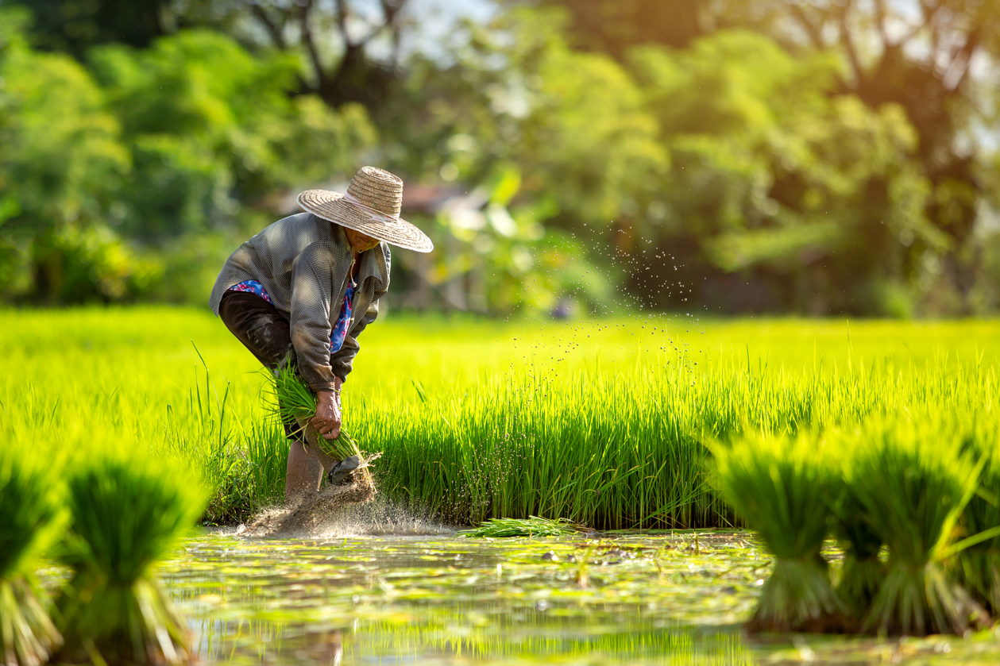
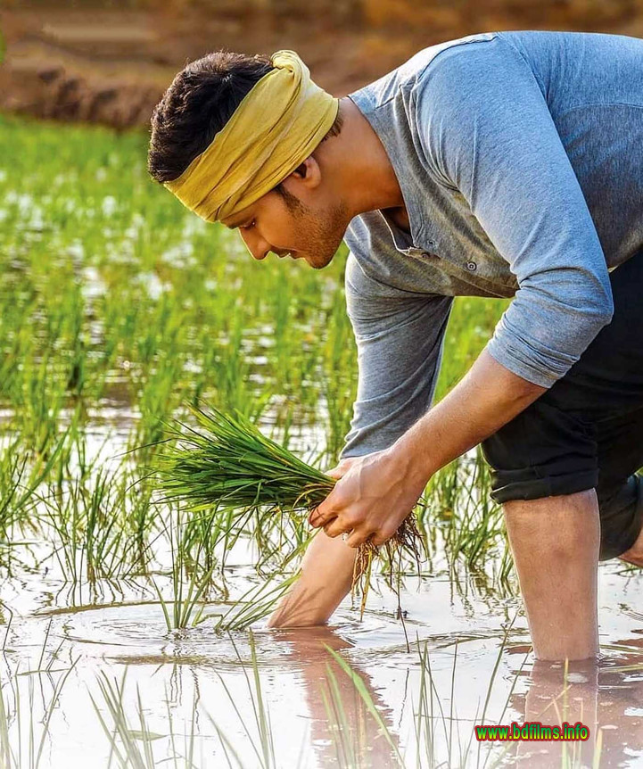

Why we started this company
How your food is grown or raised can have a major impact on your mental and emotional health as well as the environment. Organic foods often have more beneficial nutrients, such as antioxidants, than their conventionally-grown counterparts and people with allergies to foods, chemicals, or preservatives may find their symptoms lessen or go away when they eat only organic foods.

Organic produce contains fewer pesticides. Chemicals such as synthetic fungicides, herbicides, and insecticides are widely used in conventional agriculture and residues remain on (and in) the food we eat.
Organic food is often fresher because it doesn't contain preservatives that make it last longer. Organic produce is sometimes (but not always, so watch where it is from) produced on smaller farms nearer to where it is sold.
Organic farming tends to be better for the environment. Organic farming practices may reduce pollution, conserve water, reduce soil erosion, increase soil fertility, and use less energy. Farming without synthetic pesticides is also better for nearby birds and animals as well as people who live close to farms.
Organically raised animals are NOT given antibiotics, growth hormones, or fed animal byproducts. Feeding livestock animal byproducts increases the risk of mad cow disease (BSE) and the use of antibiotics can create antibiotic-resistant strains of bacteria. Organically-raised animals tend to be given more space to move around and access to the outdoors, which helps to keep them healthy.
Organic meat and milk can be richer in certain nutrients. Results of a 2016 European study show that levels of certain nutrients, including omega-3 fatty acids, were up to 50 percent higher in organic meat and milk than in conventionally raised versions.
Organic food is GMO-free. Genetically Modified Organisms (GMOs) or genetically engineered (GE) foods are plants whose DNA has been altered in ways that cannot occur in nature or in traditional crossbreeding, most commonly in order to be resistant to pesticides or produce an insecticide.
style="margin-top:10px;color:rgb(51, 0, 255);">A farmer is happy when the soil is happy. A healthy and fertile soil is the foundation of the food system that produces healthy produce.
Founder of the company
Ghattamaneni Mahesh Babu (born 9 August 1975) is an Indian actor, producer, media personality, and philanthropist who works mainly in Telugu cinema. He has appeared in more than 25 films, and won several accolades including, eight Nandi Awards, five Filmfare South Awards, four South Indian International Movie Awards, three CineMAA Awards, and one IIFA Utsavam Award. One of the highest-paid Telugu film actors,he also owns the production house G. Mahesh Babu Entertainment.
Referred to in the media as the Prince of Tollywood, he is one of the most popular and influential actors of Telugu cinema.In addition to being an actor, he is a humanitarian and philanthropist – he runs a charitable trust and non-profit organisation, Heal-a-Child. He is also associated with Rainbow Hospitals as their goodwill ambassador.He plunged into the film exhibition business along with Narayandas Narang of Asian Group with the inauguration of the seven-screen superplex at Gachibowli AMB Cinemas.
company contact number: